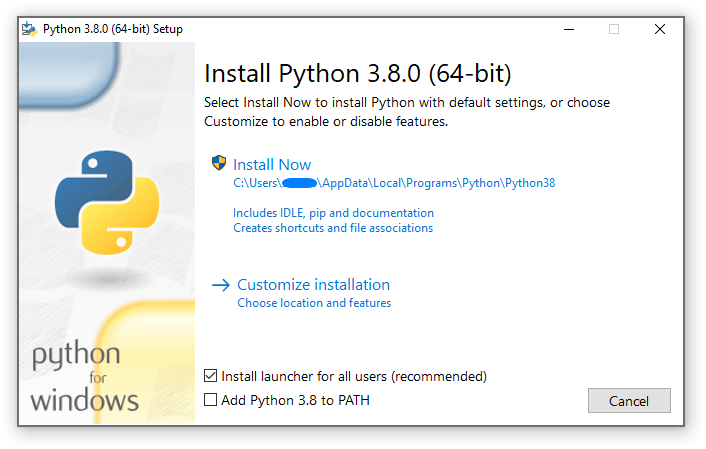
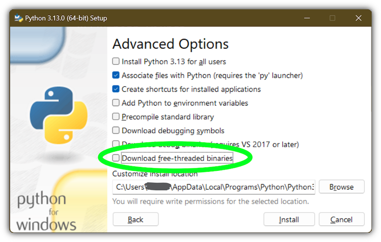

4. Using Python on Windows
.. sectionauthor:: Steve Dower <steve.dower@python.org>
This document aims to give an overview of Windows-specific behaviour you should know about when using Python on Microsoft Windows.
Unlike most Unix systems and services, Windows does not include a system supported installation of Python. Instead, Python can be obtained from a number of distributors, including directly from the CPython team. Each Python distribution will have its own benefits and drawbacks, however, consistency with other tools you are using is generally a worthwhile benefit. Before committing to the process described here, we recommend investigating your existing tools to see if they can provide Python directly.
To obtain Python from the CPython team, use the Python Install Manager. This is a standalone tool that makes Python available as global commands on your Windows machine, integrates with the system, and supports updates over time. You can download the Python Install Manager from python.org/downloads or through the Microsoft Store app.
Once you have installed the Python Install Manager, the global python
command can be used from any terminal to launch your current latest version of
Python. This version may change over time as you add or remove different
versions, and the py list command will show which is current.
In general, we recommend that you create a virtual environment
for each project and run <env>\Scripts\Activate in your terminal to use it.
This provides isolation between projects, consistency over time, and ensures
that additional commands added by packages are also available in your session.
Create a virtual environment using python -m venv <env path>.
If the python or py commands do not seem to be working, please see the
Troubleshooting section below. There are
sometimes additional manual steps required to configure your PC.
Apart from using the Python install manager, Python can also be obtained as NuGet packages. See The nuget.org packages below for more information on these packages.
The embeddable distros are minimal packages of Python suitable for embedding into larger applications. They can be installed using the Python install manager. See The embeddable package below for more information on these packages.
4.1. Python install manager
4.1.1. Installation
The Python install manager can be installed from the Microsoft Store app or downloaded and installed from python.org/downloads. The two versions are identical.
To install through the Store, simply click "Install". After it has completed,
open a terminal and type python to get started.
To install the file downloaded from python.org, either double-click and select
"Install", or run Add-AppxPackage <path to MSIX> in Windows Powershell.
After installation, the python, py, and pymanager commands should be
available. If you have existing installations of Python, or you have modified
your :envvar:`PATH` variable, you may need to remove them or undo the
modifications. See Troubleshooting for more help with fixing
non-working commands.
When you first install a runtime, you will likely be prompted to add a directory
to your :envvar:`PATH`. This is optional, if you prefer to use the py
command, but is offered for those who prefer the full range of aliases (such
as python3.14.exe) to be available. The directory will be
:file:`%LocalAppData%\Python\bin` by default, but may be customized by an
administrator. Click Start and search for "Edit environment variables for your
account" for the system settings page to add the path.
Each Python runtime you install will have its own directory for scripts. These also need to be added to :envvar:`PATH` if you want to use them.
The Python install manager will be automatically updated to new releases. This does not affect any installs of Python runtimes. Uninstalling the Python install manager does not uninstall any Python runtimes.
If you are not able to install an MSIX in your context, for example, you are using automated deployment software that does not support it, or are targeting Windows Server 2019, please see Advanced installation below for more information.
4.1.2. Basic use
The recommended command for launching Python is python, which will either
launch the version requested by the script being launched, an active virtual
environment, or the default installed version, which will be the latest stable
release unless configured otherwise. If no version is specifically requested and
no runtimes are installed at all, the current latest release will be installed
automatically.
For all scenarios involving multiple runtime versions, the recommended command
is py. This may be used anywhere in place of python or the older
py.exe launcher. By default, py matches the behaviour of python, but
also allows command line options to select a specific version as well as
subcommands to manage installations. These are detailed below.
Because the py command may already be taken by the previous version, there
is also an unambiguous pymanager command. Scripted installs that are
intending to use Python install manager should consider using pymanager, due
to the lower chance of encountering a conflict with existing installs. The only
difference between the two commands is when running without any arguments:
py will install and launch your default interpreter, while pymanager
will display help (pymanager exec ... provides equivalent behaviour to
py ...).
Each of these commands also has a windowed version that avoids creating a
console window. These are pyw, pythonw and pymanagerw. A python3
command is also included that mimics the python command. It is intended to
catch accidental uses of the typical POSIX command on Windows, but is not meant
to be widely used or recommended.
To launch your default runtime, run python or py with the arguments you
want to be passed to the runtime (such as script files or the module to launch):
$> py
...
$> python my-script.py
...
$> py -m this
...The default runtime can be overridden with the :envvar:`PYTHON_MANAGER_DEFAULT` environment variable, or a configuration file. See Configuration for information about configuration settings.
To launch a specific runtime, the py command accepts a -V:<TAG> option.
This option must be specified before any others. The tag is part or all of the
identifier for the runtime; for those from the CPython team, it looks like the
version, potentially with the platform. For compatibility, the V: may be
omitted in cases where the tag refers to an official release and starts with
3.
$> py -V:3.14 ...
$> py -V:3-arm64 ...Runtimes from other distributors may require the company to be included as
well. This should be separated from the tag by a slash, and may be a prefix.
Specifying the company is optional when it is PythonCore, and specifying the
tag is optional (but not the slash) when you want the latest release from a
specific company.
$> py -V:Distributor\1.0 ...
$> py -V:distrib/ ...If no version is specified, but a script file is passed, the script will be inspected for a shebang line. This is a special format for the first line in a file that allows overriding the command. See Shebang lines for more information. When there is no shebang line, or it cannot be resolved, the script will be launched with the default runtime.
If you are running in an active virtual environment, have not requested a
particular version, and there is no shebang line, the default runtime will be
that virtual environment. In this scenario, the python command was likely
already overridden and none of these checks occurred. However, this behaviour
ensures that the py command can be used interchangeably.
When you launch either python or py but do not have any runtimes
installed, and the requested version is the default, it will be installed
automatically and then launched. Otherwise, the requested version will be
installed if automatic installation is configured (most likely by setting
PYTHON_MANAGER_AUTOMATIC_INSTALL to true), or if the py exec or
pymanager exec forms of the command were used.
4.1.3. Command help
The py help command will display the full list of supported commands, along
with their options. Any command may be passed the -? option to display its
help, or its name passed to py help.
$> py help
$> py help install
$> py install /?All commands support some common options, which will be shown by py help.
These options must be specified after any subcommand. Specifying -v or
--verbose will increase the amount of output shown, and -vv will
increase it further for debugging purposes. Passing -q or --quiet will
reduce output, and -qq will reduce it further.
The --config=<PATH> option allows specifying a configuration file to
override multiple settings at once. See Configuration below for more
information about these files.
4.1.4. Listing runtimes
$> py list [-f=|--format=<FMT>] [-1|--one] [--online|-s=|--source=<URL>] [<TAG>...]The list of installed runtimes can be seen using py list. A filter may be
added in the form of one or more tags (with or without company specifier), and
each may include a <, <=, >= or > prefix to restrict to a range.
A range of formats are supported, and can be passed as the --format=<FMT> or
-f <FMT> option. Formats include table (a user friendly table view),
csv (comma-separated table), json (a single JSON blob), jsonl (one
JSON blob per result), exe (just the executable path), prefix (just the
prefix path).
The --one or -1 option only displays a single result. If the default
runtime is included, it will be the one. Otherwise, the "best" result is shown
("best" is deliberately vaguely defined, but will usually be the most recent
version). The result shown by py list --one <TAG> will match the runtime
that would be launched by py -V:<TAG>.
The --only-managed option excludes results that were not installed by the
Python install manager. This is useful when determining which runtimes may be
updated or uninstalled through the py command.
The --online option is short for passing --source=<URL> with the default
source. Passing either of these options will search the online index for
runtimes that can be installed. The result shown by py list --online --one
<TAG> will match the runtime that would be installed by py install <TAG>.
$> py list --online 3.14For compatibility with the old launcher, the --list, --list-paths,
-0 and -0p commands (e.g. py -0p) are retained. They do not allow
additional options, and will produce legacy formatted output.
4.1.5. Installing runtimes
$> py install [-s=|--source=<URL>] [-f|--force] [-u|--update] [--dry-run] [<TAG>...]New runtime versions may be added using py install. One or more tags may be
specified, and the special tag default may be used to select the default.
Ranges are not supported for installation.
The --source=<URL> option allows overriding the online index that is used to
obtain runtimes. This may be used with an offline index, as shown in
Offline installs.
Passing --force will ignore any cached files and remove any existing install
to replace it with the specified one.
Passing --update will replace existing installs if the new version is newer.
Otherwise, they will be left. If no tags are provided with --update, all
installs managed by the Python install manager will be updated if newer versions
are available. Updates will remove any modifications made to the install,
including globally installed packages, but virtual environments will continue to
work.
Passing --dry-run will generate output and logs, but will not modify any
installs.
In addition to the above options, the --target option will extract the
runtime to the specified directory instead of doing a normal install. This is
useful for embedding runtimes into larger applications.
$> py install ... [-t=|--target=<PATH>] <TAG>4.1.6. Offline installs
To perform offline installs of Python, you will need to first create an offline index on a machine that has network access.
$> py install --download=<PATH> ... <TAG>...The --download=<PATH> option will download the packages for the listed tags
and create a directory containing them and an index.json file suitable for
later installation. This entire directory can be moved to the offline machine
and used to install one or more of the bundled runtimes:
$> py install --source="<PATH>\index.json" <TAG>...The Python install manager can be installed by downloading its installer and moving it to another machine before installing.
Alternatively, the ZIP files in an offline index directory can simply be transferred to another machine and extracted. This will not register the install in any way, and so it must be launched by directly referencing the executables in the extracted directory, but it is sometimes a preferable approach in cases where installing the Python install manager is not possible or convenient.
In this way, Python runtimes can be installed and managed on a machine without access to the internet.
4.1.7. Uninstalling runtimes
$> py uninstall [-y|--yes] <TAG>...Runtimes may be removed using the py uninstall command. One or more tags
must be specified. Ranges are not supported here.
The --yes option bypasses the confirmation prompt before uninstalling.
Instead of passing tags individually, the --purge option may be specified.
This will remove all runtimes managed by the Python install manager, including
cleaning up the Start menu, registry, and any download caches. Runtimes that
were not installed by the Python install manager will not be impacted, and
neither will manually created configuration files.
$> py uninstall [-y|--yes] --purgeThe Python install manager can be uninstalled through the Windows "Installed
apps" settings page. This does not remove any runtimes, and they will still be
usable, though the global python and py commands will be removed.
Reinstalling the Python install manager will allow you to manage these runtimes
again. To completely clean up all Python runtimes, run with --purge before
uninstalling the Python install manager.
4.1.8. Configuration
Python install manager is configured with a hierarchy of configuration files, environment variables, command-line options, and registry settings. In general, configuration files have the ability to configure everything, including the location of other configuration files, while registry settings are administrator-only and will override configuration files. Command-line options override all other settings, but not every option is available.
This section will describe the defaults, but be aware that modified or overridden installs may resolve settings differently.
A global configuration file may be configured by an administrator, and would be
read first. The user configuration file is stored at
:file:`%AppData%\Python\pymanager.json` (by default) and is read next,
overwriting any settings from earlier files. An additional configuration file
may be specified as the PYTHON_MANAGER_CONFIG environment variable or the
--config command line option (but not both).
The following settings are those that are considered likely to be modified in normal use. Later sections list those that are intended for administrative customization.
.. rubric:: Standard configuration options
Config Key |
Environment Variable |
Description |
|---|---|---|
|
.. envvar:: PYTHON_MANAGER_DEFAULT |
The preferred default version to launch or install. By default, this is interpreted as the most recent non-prerelease version from the CPython team. |
|
|
The preferred default platform to launch or install.
This is treated as a suffix to the specified tag, such that |
|
|
The location where log files are written. By default, :file:`%TEMP%`. |
|
|
True to allow automatic installs when specifying a particular runtime to launch. By default, true. |
|
|
True to allow listing and launching runtimes that were not installed by the Python install manager, or false to exclude them. By default, true. |
|
|
True to allow shebangs in |
|
|
Set the default level of output (0-50). By default, 20. Lower values produce more output. The environment variables are boolean, and may produce additional output during startup that is later suppressed by other configuration. |
|
|
True to confirm certain actions before taking them (such as uninstall), or false to skip the confirmation. By default, true. |
|
|
Override the index feed to obtain new installs from. |
|
|
Specify the default format used by the |
|
(none) |
Specify the root directory that runtimes will be installed into. If you change this setting, previously installed runtimes will not be usable unless you move them to the new location. |
|
(none) |
Specify the directory where global commands (such as |
|
(none) |
Specify the directory where downloaded files are stored. This directory is a temporary cache, and can be cleaned up from time to time. |
Dotted names should be nested inside JSON objects, for example, list.format
would be specified as {"list": {"format": "table"}}.
4.1.9. Shebang lines
If the first line of a script file starts with #!, it is known as a
"shebang" line. Linux and other Unix like operating systems have native
support for such lines and they are commonly used on such systems to indicate
how a script should be executed. The python and py commands allow the
same facilities to be used with Python scripts on Windows.
To allow shebang lines in Python scripts to be portable between Unix and Windows, a number of 'virtual' commands are supported to specify which interpreter to use. The supported virtual commands are:
/usr/bin/env <ALIAS>/usr/bin/env -S <ALIAS>/usr/bin/<ALIAS>/usr/local/bin/<ALIAS><ALIAS>
For example, if the first line of your script starts with
#! /usr/bin/pythonThe default Python or an active virtual environment will be located and used.
As many Python scripts written to work on Unix will already have this line,
you should find these scripts can be used by the launcher without modification.
If you are writing a new script on Windows which you hope will be useful on
Unix, you should use one of the shebang lines starting with /usr.
Any of the above virtual commands can have <ALIAS> replaced by an alias from
an installed runtime. That is, any command generated in the global aliases
directory (which you may have added to your :envvar:`PATH` environment variable)
can be used in a shebang, even if it is not on your :envvar:`PATH`. This allows
the use of shebangs like /usr/bin/python3.12 to select a particular runtime.
If no runtimes are installed, or if automatic installation is enabled, the requested runtime will be installed if necessary. See Configuration for information about configuration settings.
The /usr/bin/env form of shebang line will also search the :envvar:`PATH`
environment variable for unrecognized commands. This corresponds to the
behaviour of the Unix env program, which performs the same search, but
prefers launching known Python commands. A warning may be displayed when
searching for arbitrary executables, and this search may be disabled by the
shebang_can_run_anything configuration option.
Shebang lines that do not match any of patterns are treated as Windows
executable paths that are absolute or relative to the directory containing the
script file. This is a convenience for Windows-only scripts, such as those
generated by an installer, since the behavior is not compatible with Unix-style
shells. These paths may be quoted, and may include multiple arguments, after
which the path to the script and any additional arguments will be appended.
This functionality may be disabled by the shebang_can_run_anything
configuration option.
Note
The behaviour of shebangs in the Python install manager is subtly different
from the previous py.exe launcher, and the old configuration options no
longer apply. If you are specifically reliant on the old behaviour or
configuration, we recommend installing the legacy launcher. The legacy
launcher's py command will override PyManager's one by default, and you
will need to use pymanager commands for installing and uninstalling.
4.1.10. Advanced installation
For situations where an MSIX cannot be installed, such as some older administrative distribution platforms, there is an MSI available from the python.org downloads page. This MSI has no user interface, and can only perform per-machine installs to its default location in Program Files. It will attempt to modify the system :envvar:`PATH` environment variable to include this install location, but be sure to validate this on your configuration.
Note
Windows Server 2019 is the only version of Windows that CPython supports that does not support MSIX. For Windows Server 2019, you should use the MSI.
Be aware that the MSI package does not bundle any runtimes, and so is not suitable for installs into offline environments without also creating an offline install index. See Offline installs and Administrative configuration for information on handling these scenarios.
Runtimes installed by the MSI are shared with those installed by the MSIX, and
are all per-user only. The Python install manager does not support installing
runtimes per-machine. To emulate a per-machine install, you can use py install
--target=<shared location> as administrator and add your own system-wide
modifications to :envvar:`PATH`, the registry, or the Start menu.
When the MSIX is installed, but commands are not available in the :envvar:`PATH` environment variable, they can be found under :file:`%LocalAppData%\Microsoft\WindowsApps\PythonSoftwareFoundation.PythonManager_3847v3x7pw1km` or :file:`%LocalAppData%\Microsoft\WindowsApps\PythonSoftwareFoundation.PythonManager_qbz5n2kfra8p0`, depending on whether it was installed from python.org or through the Windows Store. Attempting to run the executable directly from Program Files is not recommended.
To programmatically install the Python install manager, it is easiest to use WinGet, which is included with all supported versions of Windows:
$> winget install 9NQ7512CXL7T -e --accept-package-agreements --disable-interactivity
# Optionally run the configuration checker and accept all changes
$> py install --configure -yTo download the Python install manager and install on another machine, the
following WinGet command will download the required files from the Store to your
Downloads directory (add -d <location> to customize the output location).
This also generates a YAML file that appears to be unnecessary, as the
downloaded MSIX can be installed by launching or using the commands below.
$> winget download 9NQ7512CXL7T -e --skip-license --accept-package-agreements --accept-source-agreementsTo programmatically install or uninstall an MSIX using only PowerShell, the Add-AppxPackage and Remove-AppxPackage PowerShell cmdlets are recommended:
$> Add-AppxPackage C:\Downloads\python-manager-25.0.msix
...
$> Get-AppxPackage PythonSoftwareFoundation.PythonManager | Remove-AppxPackageThe latest release can be downloaded and installed by Windows by passing the AppInstaller file to the Add-AppxPackage command. This installs using the MSIX on python.org, and is only recommended for cases where installing via the Store (interactively or using WinGet) is not possible.
$> Add-AppxPackage -AppInstallerFile https://www.python.org/ftp/python/pymanager/pymanager.appinstallerOther tools and APIs may also be used to provision an MSIX package for all users on a machine, but Python does not consider this a supported scenario. We suggest looking into the PowerShell Add-AppxProvisionedPackage cmdlet, the native Windows PackageManager class, or the documentation and support for your deployment tool.
Regardless of the install method, users will still need to install their own copies of Python itself, as there is no way to trigger those installs without being a logged in user. When using the MSIX, the latest version of Python will be available for all users to install without network access.
Note that the MSIX downloadable from the Store and from the Python website are subtly different and cannot be installed at the same time. Wherever possible, we suggest using the above WinGet commands to download the package from the Store to reduce the risk of setting up conflicting installs. There are no licensing restrictions on the Python install manager that would prevent using the Store package in this way.
4.1.11. Administrative configuration
There are a number of options that may be useful for administrators to override configuration of the Python install manager. These can be used to provide local caching, disable certain shortcut types, override bundled content. All of the above configuration options may be set, as well as those below.
Configuration options may be overridden in the registry by setting values under
:file:`HKEY_LOCAL_MACHINE\Software\Policies\Python\PyManager`, where the
value name matches the configuration key and the value type is REG_SZ. Note
that this key can itself be customized, but only by modifying the core config
file distributed with the Python install manager. We recommend, however, that
registry values are used only to set base_config to a JSON file containing
the full set of overrides. Registry key overrides will replace any other
configured setting, while base_config allows users to further modify
settings they may need.
Note that most settings with environment variables support those variables
because their default setting specifies the variable. If you override them, the
environment variable will no longer work, unless you override it with another
one. For example, the default value of confirm is literally
%PYTHON_MANAGER_CONFIRM%, which will resolve the variable at load time. If
you override the value to yes, then the environment variable will no longer
be used. If you override the value to %CONFIRM%, then that environment
variable will be used instead.
Configuration settings that are paths are interpreted as relative to the directory containing the configuration file that specified them.
.. rubric:: Administrative configuration options
Config Key |
Description |
|---|---|
|
The highest priority configuration file to read. Note that only the built-in configuration file and the registry can modify this setting. |
|
The second configuration file to read. |
|
The third configuration file to read. |
|
Registry location to check for overrides. Note that only the built-in configuration file can modify this setting. |
|
Read-only directory containing locally cached files. |
|
Path or URL to an index to consult when the main index cannot be accessed. |
|
Comma-separated list of shortcut kinds to allow (e.g. |
|
Comma-separated list of shortcut kinds to exclude
(e.g. |
|
Registry location to read and write PEP 514 entries into. By default, :file:`HKEY_CURRENT_USER\Software\Python`. |
|
Start menu folder to write shortcuts into.
By default, |
|
Path to the active virtual environment.
By default, this is |
|
True to suppress visible warnings when a shebang launches an application other than a Python runtime. |
4.1.12. Installing free-threaded binaries
New in version 3.13:
Pre-built distributions of the free-threaded build are available
by installing tags with the t suffix.
$> py install 3.14t
$> py install 3.14t-arm64
$> py install 3.14t-32This will install and register as normal. If you have no other runtimes
installed, then python will launch this one. Otherwise, you will need to use
py -V:3.14t ... or, if you have added the global aliases directory to your
:envvar:`PATH` environment variable, the python3.14t.exe commands.
4.1.13. Troubleshooting
If your Python install manager does not seem to be working correctly, please work through these tests and fixes to see if it helps. If not, please report an issue at our bug tracker, including any relevant log files (written to your :file:`%TEMP%` directory by default).
.. rubric:: Troubleshooting
Symptom |
Things to try |
|---|---|
|
Did you install the Python install manager? |
Click Start, open "Manage app execution aliases", and check that the aliases for "Python (default)" are enabled. If they already are, try disabling and re-enabling to refresh the command. The "Python (default windowed)" and "Python install manager" commands may also need refreshing. |
|
Check that the |
|
|
Did you install the Python install manager? |
Click Start, open "Manage app execution aliases", and check that the aliases for "Python (default)" are enabled. If they already are, try disabling and re-enabling to refresh the command. The "Python (default windowed)" and "Python install manager" commands may also need refreshing. |
|
|
This usually means you have the legacy launcher installed and it has priority over the Python install manager. To remove, click Start, open "Installed apps", search for "Python launcher" and uninstall it. |
|
Click Start, open "Installed apps", look for any existing Python runtimes, and either remove them or Modify and disable the :envvar:`PATH` options. |
Click Start, open "Manage app execution aliases", and check that your
|
|
|
Check your :envvar:`PYTHON_MANAGER_DEFAULT` environment variable
or |
Installs that are managed by the Python install manager will be chosen
ahead of unmanaged installs.
Use |
|
Prerelease and experimental installs that are not managed by the Python
install manager may be chosen ahead of stable releases.
Configure your default tag or uninstall the prerelease runtime
and reinstall using |
|
|
Click Start, open "Manage app execution aliases", and check that your
|
|
Have you activated a virtual environment?
Run the |
The package may be available but missing the generated executable.
We recommend using the |
|
Typing |
This is a known limitation of the operating system. Either specify |
Drag-dropping files onto a script doesn't work |
This is a known limitation of the operating system. It is supported with the legacy launcher, or with the Python install manager when installed from the MSI. |
4.2. The embeddable package
New in version 3.5:
The embedded distribution is a ZIP file containing a minimal Python environment. It is intended for acting as part of another application, rather than being directly accessed by end-users.
To install an embedded distribution, we recommend using py install with the
--target option:
$> py install 3.14-embed --target=runtimeWhen extracted, the embedded distribution is (almost) fully isolated from the
user's system, including environment variables, system registry settings, and
installed packages. The standard library is included as pre-compiled and
optimized .pyc files in a ZIP, and python3.dll, python313.dll,
python.exe and pythonw.exe are all provided. Tcl/tk (including all
dependents, such as Idle), pip and the Python documentation are not included.
A default ._pth file is included, which further restricts the default search
paths (as described below in Finding modules). This file is
intended for embedders to modify as necessary.
Third-party packages should be installed by the application installer alongside the embedded distribution. Using pip to manage dependencies as for a regular Python installation is not supported with this distribution, though with some care it may be possible to include and use pip for automatic updates. In general, third-party packages should be treated as part of the application ("vendoring") so that the developer can ensure compatibility with newer versions before providing updates to users.
The two recommended use cases for this distribution are described below.
4.2.1. Python application
An application written in Python does not necessarily require users to be aware of that fact. The embedded distribution may be used in this case to include a private version of Python in an install package. Depending on how transparent it should be (or conversely, how professional it should appear), there are two options.
Using a specialized executable as a launcher requires some coding, but provides
the most transparent experience for users. With a customized launcher, there are
no obvious indications that the program is running on Python: icons can be
customized, company and version information can be specified, and file
associations behave properly. In most cases, a custom launcher should simply be
able to call Py_Main with a hard-coded command line.
The simpler approach is to provide a batch file or generated shortcut that
directly calls the python.exe or pythonw.exe with the required
command-line arguments. In this case, the application will appear to be Python
and not its actual name, and users may have trouble distinguishing it from other
running Python processes or file associations.
With the latter approach, packages should be installed as directories alongside the Python executable to ensure they are available on the path. With the specialized launcher, packages can be located in other locations as there is an opportunity to specify the search path before launching the application.
4.2.2. Embedding Python
Applications written in native code often require some form of scripting
language, and the embedded Python distribution can be used for this purpose. In
general, the majority of the application is in native code, and some part will
either invoke python.exe or directly use python3.dll. For either case,
extracting the embedded distribution to a subdirectory of the application
installation is sufficient to provide a loadable Python interpreter.
As with the application use, packages can be installed to any location as there is an opportunity to specify search paths before initializing the interpreter. Otherwise, there is no fundamental differences between using the embedded distribution and a regular installation.
4.3. The nuget.org packages
New in version 3.5.2:
The nuget.org package is a reduced size Python environment intended for use on continuous integration and build systems that do not have a system-wide install of Python. While nuget is "the package manager for .NET", it also works perfectly fine for packages containing build-time tools.
Visit nuget.org for the most up-to-date information on using nuget. What follows is a summary that is sufficient for Python developers.
The nuget.exe command line tool may be downloaded directly from
https://aka.ms/nugetclidl, for example, using curl or PowerShell. With the
tool, the latest version of Python for 64-bit or 32-bit machines is installed
using:
nuget.exe install python -ExcludeVersion -OutputDirectory .
nuget.exe install pythonx86 -ExcludeVersion -OutputDirectory .To select a particular version, add a -Version 3.x.y. The output directory
may be changed from ., and the package will be installed into a
subdirectory. By default, the subdirectory is named the same as the package,
and without the -ExcludeVersion option this name will include the specific
version installed. Inside the subdirectory is a tools directory that
contains the Python installation:
# Without -ExcludeVersion
> .\python.3.5.2\tools\python.exe -V
Python 3.5.2
# With -ExcludeVersion
> .\python\tools\python.exe -V
Python 3.5.2In general, nuget packages are not upgradeable, and newer versions should be installed side-by-side and referenced using the full path. Alternatively, delete the package directory manually and install it again. Many CI systems will do this automatically if they do not preserve files between builds.
Alongside the tools directory is a build\native directory. This
contains a MSBuild properties file python.props that can be used in a
C++ project to reference the Python install. Including the settings will
automatically use the headers and import libraries in your build.
The package information pages on nuget.org are www.nuget.org/packages/python for the 64-bit version, www.nuget.org/packages/pythonx86 for the 32-bit version, and www.nuget.org/packages/pythonarm64 for the ARM64 version
4.3.1. Free-threaded packages
New in version 3.13:
Packages containing free-threaded binaries are named
python-freethreaded
for the 64-bit version, pythonx86-freethreaded for the 32-bit
version, and pythonarm64-freethreaded for the ARM64
version. These packages contain both the python3.13t.exe and
python.exe entry points, both of which run free threaded.
4.4. Alternative bundles
Besides the standard CPython distribution, there are modified packages including additional functionality. The following is a list of popular versions and their key features:
- ActivePython
Installer with multi-platform compatibility, documentation, PyWin32
- Anaconda
Popular scientific modules (such as numpy, scipy and pandas) and the
condapackage manager.- Enthought Deployment Manager
"The Next Generation Python Environment and Package Manager".
Previously Enthought provided Canopy, but it reached end of life in 2016.
- WinPython
Windows-specific distribution with prebuilt scientific packages and tools for building packages.
Note that these packages may not include the latest versions of Python or other libraries, and are not maintained or supported by the core Python team.
4.5. Supported Windows versions
As specified in PEP 11, a Python release only supports a Windows platform while Microsoft considers the platform under extended support. This means that Python |version| supports Windows 10 and newer. If you require Windows 7 support, please install Python 3.8. If you require Windows 8.1 support, please install Python 3.12.
4.6. Removing the MAX_PATH limitation
Windows historically has limited path lengths to 260 characters. This meant that paths longer than this would not resolve and errors would result.
In the latest versions of Windows, this limitation can be expanded to over
32,000 characters. Your administrator will need to activate the "Enable Win32
long paths" group policy, or set LongPathsEnabled to 1 in the registry
key HKEY_LOCAL_MACHINE\SYSTEM\CurrentControlSet\Control\FileSystem.
This allows the open function, the os module and most other
path functionality to accept and return paths longer than 260 characters.
After changing the above option and rebooting, no further configuration is required.
4.7. UTF-8 mode
New in version 3.7:
Windows still uses legacy encodings for the system encoding (the ANSI Code
Page). Python uses it for the default encoding of text files (e.g.
locale.getencoding).
This may cause issues because UTF-8 is widely used on the internet and most Unix systems, including WSL (Windows Subsystem for Linux).
You can use the Python UTF-8 Mode to change the default text
encoding to UTF-8. You can enable the Python UTF-8 Mode via
the -X utf8 command line option, or the PYTHONUTF8=1 environment
variable. See :envvar:`PYTHONUTF8` for enabling UTF-8 mode, and
Python install manager for how to modify environment variables.
When the Python UTF-8 Mode is enabled, you can still use the system encoding (the ANSI Code Page) via the "mbcs" codec.
Note that adding PYTHONUTF8=1 to the default environment variables
will affect all Python 3.7+ applications on your system.
If you have any Python 3.7+ applications which rely on the legacy
system encoding, it is recommended to set the environment variable
temporarily or use the -X utf8 command line option.
Note
Even when UTF-8 mode is disabled, Python uses UTF-8 by default on Windows for:
Console I/O including standard I/O (see PEP 528 for details).
The filesystem encoding (see PEP 529 for details).
4.8. Finding modules
These notes supplement the description at The initialization of the sys.path module search path with detailed Windows notes.
When no ._pth file is found, this is how sys.path is populated on
Windows:
An empty entry is added at the start, which corresponds to the current directory.
If the environment variable :envvar:`PYTHONPATH` exists, as described in Environment variables, its entries are added next. Note that on Windows, paths in this variable must be separated by semicolons, to distinguish them from the colon used in drive identifiers (
C:\etc.).Additional "application paths" can be added in the registry as subkeys of :samp:`\SOFTWARE\Python\PythonCore\{version}\PythonPath` under both the
HKEY_CURRENT_USERandHKEY_LOCAL_MACHINEhives. Subkeys which have semicolon-delimited path strings as their default value will cause each path to be added tosys.path. (Note that all known installers only use HKLM, so HKCU is typically empty.)If the environment variable :envvar:`PYTHONHOME` is set, it is assumed as "Python Home". Otherwise, the path of the main Python executable is used to locate a "landmark file" (either
Lib\os.pyorpythonXY.zip) to deduce the "Python Home". If a Python home is found, the relevant sub-directories added tosys.path(Lib,plat-win, etc) are based on that folder. Otherwise, the core Python path is constructed from the PythonPath stored in the registry.If the Python Home cannot be located, no :envvar:`PYTHONPATH` is specified in the environment, and no registry entries can be found, a default path with relative entries is used (e.g.
.\Lib;.\plat-win, etc).
If a pyvenv.cfg file is found alongside the main executable or in the
directory one level above the executable, the following variations apply:
If
homeis an absolute path and :envvar:`PYTHONHOME` is not set, this path is used instead of the path to the main executable when deducing the home location.
The end result of all this is:
When running :file:`python.exe`, or any other .exe in the main Python directory (either an installed version, or directly from the PCbuild directory), the core path is deduced, and the core paths in the registry are ignored. Other "application paths" in the registry are always read.
When Python is hosted in another .exe (different directory, embedded via COM, etc), the "Python Home" will not be deduced, so the core path from the registry is used. Other "application paths" in the registry are always read.
If Python can't find its home and there are no registry value (frozen .exe, some very strange installation setup) you get a path with some default, but relative, paths.
For those who want to bundle Python into their application or distribution, the following advice will prevent conflicts with other installations:
Include a
._pthfile alongside your executable containing the directories to include. This will ignore paths listed in the registry and environment variables, and also ignoresiteunlessimport siteis listed.If you are loading :file:`python3.dll` or :file:`python37.dll` in your own executable, explicitly set
PyConfig.module_search_pathsbeforePy_InitializeFromConfig.Clear and/or overwrite :envvar:`PYTHONPATH` and set :envvar:`PYTHONHOME` before launching :file:`python.exe` from your application.
If you cannot use the previous suggestions (for example, you are a distribution that allows people to run :file:`python.exe` directly), ensure that the landmark file (:file:`Lib\os.py`) exists in your install directory. (Note that it will not be detected inside a ZIP file, but a correctly named ZIP file will be detected instead.)
These will ensure that the files in a system-wide installation will not take precedence over the copy of the standard library bundled with your application. Otherwise, your users may experience problems using your application. Note that the first suggestion is the best, as the others may still be susceptible to non-standard paths in the registry and user site-packages.
Changed in version 3.6:
Add ._pth file support and removes applocal option from
pyvenv.cfg.
Changed in version 3.6:
Add :file:`python{XX}.zip` as a potential landmark when directly adjacent to the executable.
Deprecated since version 3.6:
Modules specified in the registry under Modules (not PythonPath)
may be imported by importlib.machinery.WindowsRegistryFinder.
This finder is enabled on Windows in 3.6.0 and earlier, but may need to
be explicitly added to sys.meta_path in the future.
4.9. Additional modules
Even though Python aims to be portable among all platforms, there are features that are unique to Windows. A couple of modules, both in the standard library and external, and snippets exist to use these features.
The Windows-specific standard modules are documented in MS Windows Specific Services.
4.9.1. PyWin32
The :pypi:`PyWin32` module by Mark Hammond is a collection of modules for advanced Windows-specific support. This includes utilities for:
Component Object Model (COM)
Win32 API calls
Registry
Event log
Microsoft Foundation Classes (MFC) user interfaces
PythonWin is a sample MFC application shipped with PyWin32. It is an embeddable IDE with a built-in debugger.
See also
- Win32 How Do I...?
by Tim Golden
- Python and COM
by David and Paul Boddie
4.9.2. cx_Freeze
cx_Freeze wraps Python scripts into executable Windows programs (:file:`{*}.exe` files). When you have done this, you can distribute your application without requiring your users to install Python.
4.10. Compiling Python on Windows
If you want to compile CPython yourself, first thing you should do is get the source. You can download either the latest release's source or just grab a fresh checkout.
The source tree contains a build solution and project files for Microsoft Visual Studio, which is the compiler used to build the official Python releases. These files are in the :file:`PCbuild` directory.
Check :file:`PCbuild/readme.txt` for general information on the build process.
For extension modules, consult Building C and C++ Extensions on Windows.
4.11. The full installer (deprecated)
Deprecated since version 3.14:
This installer is deprecated since 3.14 and will not be produced for Python 3.16 or later. See Python install manager for the modern installer.
4.11.1. Installation steps
Four Python |version| installers are available for download - two each for the 32-bit and 64-bit versions of the interpreter. The web installer is a small initial download, and it will automatically download the required components as necessary. The offline installer includes the components necessary for a default installation and only requires an internet connection for optional features. See Installing without downloading for other ways to avoid downloading during installation.
After starting the installer, one of two options may be selected:

If you select "Install Now":
You will not need to be an administrator (unless a system update for the C Runtime Library is required or you install the Python install manager for all users)
Python will be installed into your user directory
The Python install manager will be installed according to the option at the bottom of the first page
The standard library, test suite, launcher and pip will be installed
If selected, the install directory will be added to your :envvar:`PATH`
Shortcuts will only be visible for the current user
Selecting "Customize installation" will allow you to select the features to install, the installation location and other options or post-install actions. To install debugging symbols or binaries, you will need to use this option.
To perform an all-users installation, you should select "Customize installation". In this case:
You may be required to provide administrative credentials or approval
Python will be installed into the Program Files directory
The Python install manager will be installed into the Windows directory
Optional features may be selected during installation
The standard library can be pre-compiled to bytecode
If selected, the install directory will be added to the system :envvar:`PATH`
Shortcuts are available for all users
4.11.2. Removing the MAX_PATH limitation
Windows historically has limited path lengths to 260 characters. This meant that paths longer than this would not resolve and errors would result.
In the latest versions of Windows, this limitation can be expanded to
approximately 32,000 characters. Your administrator will need to activate the
"Enable Win32 long paths" group policy, or set LongPathsEnabled to 1
in the registry key
HKEY_LOCAL_MACHINE\SYSTEM\CurrentControlSet\Control\FileSystem.
This allows the open function, the os module and most other
path functionality to accept and return paths longer than 260 characters.
After changing the above option, no further configuration is required.
Changed in version 3.6:
Support for long paths was enabled in Python.
4.11.3. Installing without UI
All of the options available in the installer UI can also be specified from the command line, allowing scripted installers to replicate an installation on many machines without user interaction. These options may also be set without suppressing the UI in order to change some of the defaults.
The following options (found by executing the installer with /?) can be
passed into the installer:
Name |
Description |
|---|---|
/passive |
to display progress without requiring user interaction |
/quiet |
to install/uninstall without displaying any UI |
/simple |
to prevent user customization |
/uninstall |
to remove Python (without confirmation) |
/layout [directory] |
to pre-download all components |
/log [filename] |
to specify log files location |
All other options are passed as name=value, where the value is usually
0 to disable a feature, 1 to enable a feature, or a path. The full list
of available options is shown below.
Name |
Description |
Default |
|---|---|---|
InstallAllUsers |
Perform a system-wide installation. |
0 |
TargetDir |
The installation directory |
Selected based on InstallAllUsers |
DefaultAllUsersTargetDir |
The default installation directory for all-user installs |
:file:`%ProgramFiles%\Python X.Y` or :file:`%ProgramFiles(x86)%\Python X.Y` |
DefaultJustForMeTargetDir |
The default install directory for just-for-me installs |
:file:`%LocalAppData%\Programs\Python\PythonXY` or :file:`%LocalAppData%\Programs\Python\PythonXY-32` or :file:`%LocalAppData%\Programs\Python\PythonXY-64` |
DefaultCustomTargetDir |
The default custom install directory displayed in the UI |
(empty) |
AssociateFiles |
Create file associations if the launcher is also installed. |
1 |
CompileAll |
Compile all |
0 |
PrependPath |
Prepend install and Scripts
directories to :envvar:`PATH` and
add |
0 |
AppendPath |
Append install and Scripts
directories to :envvar:`PATH` and
add |
0 |
Shortcuts |
Create shortcuts for the interpreter, documentation and IDLE if installed. |
1 |
Include_doc |
Install Python manual |
1 |
Include_debug |
Install debug binaries |
0 |
Include_dev |
Install developer headers and libraries. Omitting this may lead to an unusable installation. |
1 |
Include_exe |
Install :file:`python.exe` and related files. Omitting this may lead to an unusable installation. |
1 |
Include_launcher |
Install Python install manager. |
1 |
InstallLauncherAllUsers |
Installs the launcher for all
users. Also requires
|
1 |
Include_lib |
Install standard library and extension modules. Omitting this may lead to an unusable installation. |
1 |
Include_pip |
Install bundled pip and setuptools |
1 |
Include_symbols |
Install debugging symbols ( |
0 |
Include_tcltk |
Install Tcl/Tk support and IDLE |
1 |
Include_test |
Install standard library test suite |
1 |
Include_tools |
Install utility scripts |
1 |
LauncherOnly |
Only installs the launcher. This will override most other options. |
0 |
SimpleInstall |
Disable most install UI |
0 |
SimpleInstallDescription |
A custom message to display when the simplified install UI is used. |
(empty) |
For example, to silently install a default, system-wide Python installation, you could use the following command (from an elevated command prompt):
python-3.9.0.exe /quiet InstallAllUsers=1 PrependPath=1 Include_test=0To allow users to easily install a personal copy of Python without the test suite, you could provide a shortcut with the following command. This will display a simplified initial page and disallow customization:
python-3.9.0.exe InstallAllUsers=0 Include_launcher=0 Include_test=0
SimpleInstall=1 SimpleInstallDescription="Just for me, no test suite."(Note that omitting the launcher also omits file associations, and is only recommended for per-user installs when there is also a system-wide installation that included the launcher.)
The options listed above can also be provided in a file named unattend.xml
alongside the executable. This file specifies a list of options and values.
When a value is provided as an attribute, it will be converted to a number if
possible. Values provided as element text are always left as strings. This
example file sets the same options as the previous example:
Just for me, no test suite
4.11.4. Installing without downloading
As some features of Python are not included in the initial installer download, selecting those features may require an internet connection. To avoid this need, all possible components may be downloaded on-demand to create a complete layout that will no longer require an internet connection regardless of the selected features. Note that this download may be bigger than required, but where a large number of installations are going to be performed it is very useful to have a locally cached copy.
Execute the following command from Command Prompt to download all possible
required files. Remember to substitute python-3.9.0.exe for the actual
name of your installer, and to create layouts in their own directories to
avoid collisions between files with the same name.
python-3.9.0.exe /layout [optional target directory]You may also specify the /quiet option to hide the progress display.
4.11.5. Modifying an install
Once Python has been installed, you can add or remove features through the Programs and Features tool that is part of Windows. Select the Python entry and choose "Uninstall/Change" to open the installer in maintenance mode.
"Modify" allows you to add or remove features by modifying the checkboxes - unchanged checkboxes will not install or remove anything. Some options cannot be changed in this mode, such as the install directory; to modify these, you will need to remove and then reinstall Python completely.
"Repair" will verify all the files that should be installed using the current settings and replace any that have been removed or modified.
"Uninstall" will remove Python entirely, with the exception of the Python install manager, which has its own entry in Programs and Features.
4.11.6. Installing free-threaded binaries
New in version 3.13:
To install pre-built binaries with free-threading enabled (see PEP 703), you should select "Customize installation". The second page of options includes the "Download free-threaded binaries" checkbox.

Selecting this option will download and install additional binaries to the same
location as the main Python install. The main executable is called
python3.13t.exe, and other binaries either receive a t suffix or a full
ABI suffix. Python source files and bundled third-party dependencies are shared
with the main install.
The free-threaded version is registered as a regular Python install with the
tag 3.13t (with a -32 or -arm64 suffix as normal for those
platforms). This allows tools to discover it, and for the Python install manager to
support py.exe -3.13t. Note that the launcher will interpret py.exe -3
(or a python3 shebang) as "the latest 3.x install", which will prefer the
free-threaded binaries over the regular ones, while py.exe -3.13 will not.
If you use the short style of option, you may prefer to not install the
free-threaded binaries at this time.
To specify the install option at the command line, use
Include_freethreaded=1. See Installing without downloading for instructions on
pre-emptively downloading the additional binaries for offline install. The
options to include debug symbols and binaries also apply to the free-threaded
builds.
Free-threaded binaries are also available on nuget.org.
4.12. Python launcher for Windows (deprecated)
Deprecated since version 3.14:
The launcher and this documentation have been superseded by the Python Install Manager described above. This is preserved temporarily for historical interest.
New in version 3.3:
The Python launcher for Windows is a utility which aids in locating and executing of different Python versions. It allows scripts (or the command-line) to indicate a preference for a specific Python version, and will locate and execute that version.
Unlike the :envvar:`PATH` variable, the launcher will correctly select the most appropriate version of Python. It will prefer per-user installations over system-wide ones, and orders by language version rather than using the most recently installed version.
The launcher was originally specified in PEP 397.
4.12.1. Getting started
4.12.1.1. From the command-line
Changed in version 3.6:
System-wide installations of Python 3.3 and later will put the launcher on your :envvar:`PATH`. The launcher is compatible with all available versions of Python, so it does not matter which version is installed. To check that the launcher is available, execute the following command in Command Prompt:
pyYou should find that the latest version of Python you have installed is started - it can be exited as normal, and any additional command-line arguments specified will be sent directly to Python.
If you have multiple versions of Python installed (e.g., 3.7 and |version|) you will have noticed that Python |version| was started - to launch Python 3.7, try the command:
py -3.7If you want the latest version of Python 2 you have installed, try the command:
py -2If you see the following error, you do not have the launcher installed:
'py' is not recognized as an internal or external command,
operable program or batch file.The command:
py --listdisplays the currently installed version(s) of Python.
The -x.y argument is the short form of the -V:Company/Tag argument,
which allows selecting a specific Python runtime, including those that may have
come from somewhere other than python.org. Any runtime registered by following
PEP 514 will be discoverable. The --list command lists all available
runtimes using the -V: format.
When using the -V: argument, specifying the Company will limit selection to
runtimes from that provider, while specifying only the Tag will select from all
providers. Note that omitting the slash implies a tag:
# Select any '3.*' tagged runtime
py -V:3
# Select any 'PythonCore' released runtime
py -V:PythonCore/
# Select PythonCore's latest Python 3 runtime
py -V:PythonCore/3The short form of the argument (-3) only ever selects from core Python
releases, and not other distributions. However, the longer form (-V:3) will
select from any.
The Company is matched on the full string, case-insensitive. The Tag is matched
on either the full string, or a prefix, provided the next character is a dot or a
hyphen. This allows -V:3.1 to match 3.1-32, but not 3.10. Tags are
sorted using numerical ordering (3.10 is newer than 3.1), but are
compared using text (-V:3.01 does not match 3.1).
4.12.1.2. Virtual environments
New in version 3.5:
If the launcher is run with no explicit Python version specification, and a
virtual environment (created with the standard library venv module or
the external virtualenv tool) active, the launcher will run the virtual
environment's interpreter rather than the global one. To run the global
interpreter, either deactivate the virtual environment, or explicitly specify
the global Python version.
4.12.1.3. From a script
Let's create a test Python script - create a file called hello.py with the
following contents
#! python
From the directory in which hello.py lives, execute the command:
py hello.pyYou should notice the version number of your latest Python 2.x installation is printed. Now try changing the first line to be:
#! python3Re-executing the command should now print the latest Python 3.x information.
As with the above command-line examples, you can specify a more explicit
version qualifier. Assuming you have Python 3.7 installed, try changing
the first line to #! python3.7 and you should find the 3.7
version information printed.
Note that unlike interactive use, a bare "python" will use the latest
version of Python 2.x that you have installed. This is for backward
compatibility and for compatibility with Unix, where the command python
typically refers to Python 2.
4.12.1.4. From file associations
The launcher should have been associated with Python files (i.e. .py,
.pyw, .pyc files) when it was installed. This means that
when you double-click on one of these files from Windows explorer the launcher
will be used, and therefore you can use the same facilities described above to
have the script specify the version which should be used.
The key benefit of this is that a single launcher can support multiple Python versions at the same time depending on the contents of the first line.
4.12.2. Shebang lines
If the first line of a script file starts with #!, it is known as a
"shebang" line. Linux and other Unix like operating systems have native
support for such lines and they are commonly used on such systems to indicate
how a script should be executed. This launcher allows the same facilities to
be used with Python scripts on Windows and the examples above demonstrate their
use.
To allow shebang lines in Python scripts to be portable between Unix and Windows, this launcher supports a number of 'virtual' commands to specify which interpreter to use. The supported virtual commands are:
/usr/bin/env/usr/bin/python/usr/local/bin/pythonpython
For example, if the first line of your script starts with
#! /usr/bin/pythonThe default Python or an active virtual environment will be located and used.
As many Python scripts written to work on Unix will already have this line,
you should find these scripts can be used by the launcher without modification.
If you are writing a new script on Windows which you hope will be useful on
Unix, you should use one of the shebang lines starting with /usr.
Any of the above virtual commands can be suffixed with an explicit version
(either just the major version, or the major and minor version).
Furthermore the 32-bit version can be requested by adding "-32" after the
minor version. I.e. /usr/bin/python3.7-32 will request usage of the
32-bit Python 3.7. If a virtual environment is active, the version will be
ignored and the environment will be used.
New in version 3.7:
Beginning with python launcher 3.7 it is possible to request 64-bit version
by the "-64" suffix. Furthermore it is possible to specify a major and
architecture without minor (i.e. /usr/bin/python3-64).
Changed in version 3.11:
The "-64" suffix is deprecated, and now implies "any architecture that is not provably i386/32-bit". To request a specific environment, use the new :samp:`-V:{TAG}` argument with the complete tag.
Changed in version 3.13:
Virtual commands referencing python now prefer an active virtual
environment rather than searching :envvar:`PATH`. This handles cases where
the shebang specifies /usr/bin/env python3 but :file:`python3.exe` is
not present in the active environment.
The /usr/bin/env form of shebang line has one further special property.
Before looking for installed Python interpreters, this form will search the
executable :envvar:`PATH` for a Python executable matching the name provided
as the first argument. This corresponds to the behaviour of the Unix env
program, which performs a :envvar:`PATH` search.
If an executable matching the first argument after the env command cannot
be found, but the argument starts with python, it will be handled as
described for the other virtual commands.
The environment variable :envvar:`!PYLAUNCHER_NO_SEARCH_PATH` may be set
(to any value) to skip this search of :envvar:`PATH`.
Shebang lines that do not match any of these patterns are looked up in the
[commands] section of the launcher's .INI file.
This may be used to handle certain commands in a way that makes sense for your
system. The name of the command must be a single argument (no spaces in the
shebang executable), and the value substituted is the full path to the
executable (additional arguments specified in the .INI will be quoted as part
of the filename).
Any commands not found in the .INI file are treated as Windows executable paths that are absolute or relative to the directory containing the script file. This is a convenience for Windows-only scripts, such as those generated by an installer, since the behavior is not compatible with Unix-style shells. These paths may be quoted, and may include multiple arguments, after which the path to the script and any additional arguments will be appended.
4.12.3. Arguments in shebang lines
The shebang lines can also specify additional options to be passed to the Python interpreter. For example, if you have a shebang line:
#! /usr/bin/python -vThen Python will be started with the -v option
4.12.4. Customization
4.12.4.1. Customization via INI files
Two .ini files will be searched by the launcher - py.ini in the current
user's application data directory (%LOCALAPPDATA% or $env:LocalAppData)
and py.ini in the same directory as the launcher. The same .ini files are
used for both the 'console' version of the launcher (i.e. py.exe) and for the
'windows' version (i.e. pyw.exe).
Customization specified in the "application directory" will have precedence over the one next to the executable, so a user, who may not have write access to the .ini file next to the launcher, can override commands in that global .ini file.
4.12.4.2. Customizing default Python versions
In some cases, a version qualifier can be included in a command to dictate which version of Python will be used by the command. A version qualifier starts with a major version number and can optionally be followed by a period ('.') and a minor version specifier. Furthermore it is possible to specify if a 32 or 64 bit implementation shall be requested by adding "-32" or "-64".
For example, a shebang line of #!python has no version qualifier, while
#!python3 has a version qualifier which specifies only a major version.
If no version qualifiers are found in a command, the environment variable :envvar:`!PY_PYTHON` can be set to specify the default version qualifier. If it is not set, the default is "3". The variable can specify any value that may be passed on the command line, such as "3", "3.7", "3.7-32" or "3.7-64". (Note that the "-64" option is only available with the launcher included with Python 3.7 or newer.)
If no minor version qualifiers are found, the environment variable
PY_PYTHON{major} (where {major} is the current major version qualifier
as determined above) can be set to specify the full version. If no such option
is found, the launcher will enumerate the installed Python versions and use
the latest minor release found for the major version, which is likely,
although not guaranteed, to be the most recently installed version in that
family.
On 64-bit Windows with both 32-bit and 64-bit implementations of the same (major.minor) Python version installed, the 64-bit version will always be preferred. This will be true for both 32-bit and 64-bit implementations of the launcher - a 32-bit launcher will prefer to execute a 64-bit Python installation of the specified version if available. This is so the behavior of the launcher can be predicted knowing only what versions are installed on the PC and without regard to the order in which they were installed (i.e., without knowing whether a 32 or 64-bit version of Python and corresponding launcher was installed last). As noted above, an optional "-32" or "-64" suffix can be used on a version specifier to change this behaviour.
Examples:
If no relevant options are set, the commands
pythonandpython2will use the latest Python 2.x version installed and the commandpython3will use the latest Python 3.x installed.The command
python3.7will not consult any options at all as the versions are fully specified.If
PY_PYTHON=3, the commandspythonandpython3will both use the latest installed Python 3 version.If
PY_PYTHON=3.7-32, the commandpythonwill use the 32-bit implementation of 3.7 whereas the commandpython3will use the latest installed Python (PY_PYTHON was not considered at all as a major version was specified.)If
PY_PYTHON=3andPY_PYTHON3=3.7, the commandspythonandpython3will both use specifically 3.7
In addition to environment variables, the same settings can be configured
in the .INI file used by the launcher. The section in the INI file is
called [defaults] and the key name will be the same as the
environment variables without the leading PY_ prefix (and note that
the key names in the INI file are case insensitive.) The contents of
an environment variable will override things specified in the INI file.
For example:
Setting
PY_PYTHON=3.7is equivalent to the INI file containing:
Setting
PY_PYTHON=3andPY_PYTHON3=3.7is equivalent to the INI file containing:
4.12.5. Diagnostics
If an environment variable :envvar:`!PYLAUNCHER_DEBUG` is set (to any value), the launcher will print diagnostic information to stderr (i.e. to the console). While this information manages to be simultaneously verbose and terse, it should allow you to see what versions of Python were located, why a particular version was chosen and the exact command-line used to execute the target Python. It is primarily intended for testing and debugging.
4.12.6. Dry run
If an environment variable :envvar:`!PYLAUNCHER_DRYRUN` is set (to any value), the launcher will output the command it would have run, but will not actually launch Python. This may be useful for tools that want to use the launcher to detect and then launch Python directly. Note that the command written to standard output is always encoded using UTF-8, and may not render correctly in the console.
4.12.7. Install on demand
If an environment variable :envvar:`!PYLAUNCHER_ALLOW_INSTALL` is set (to any value), and the requested Python version is not installed but is available on the Microsoft Store, the launcher will attempt to install it. This may require user interaction to complete, and you may need to run the command again.
An additional :envvar:`!PYLAUNCHER_ALWAYS_INSTALL` variable causes the launcher to always try to install Python, even if it is detected. This is mainly intended for testing (and should be used with :envvar:`!PYLAUNCHER_DRYRUN`).
4.12.8. Return codes
The following exit codes may be returned by the Python launcher. Unfortunately, there is no way to distinguish these from the exit code of Python itself.
The names of codes are as used in the sources, and are only for reference. There is no way to access or resolve them apart from reading this page. Entries are listed in alphabetical order of names.
Name |
Value |
Description |
|---|---|---|
RC_BAD_VENV_CFG |
107 |
A :file:`pyvenv.cfg` was found but is corrupt. |
RC_CREATE_PROCESS |
101 |
Failed to launch Python. |
RC_INSTALLING |
111 |
An install was started, but the command will need to be re-run after it completes. |
RC_INTERNAL_ERROR |
109 |
Unexpected error. Please report a bug. |
RC_NO_COMMANDLINE |
108 |
Unable to obtain command line from the operating system. |
RC_NO_PYTHON |
103 |
Unable to locate the requested version. |
RC_NO_VENV_CFG |
106 |
A :file:`pyvenv.cfg` was required but not found. |